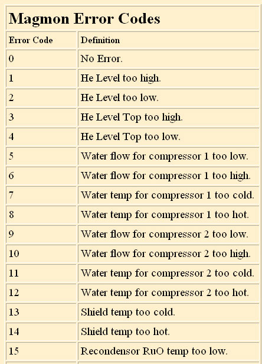
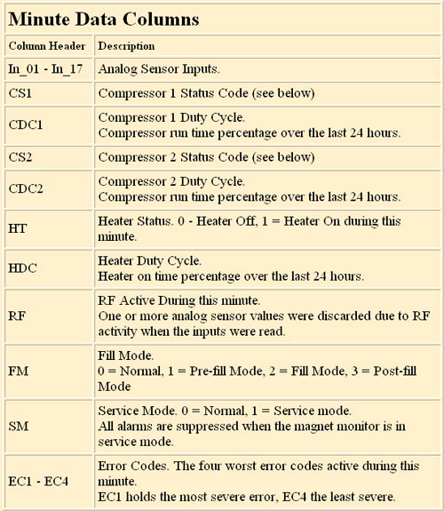
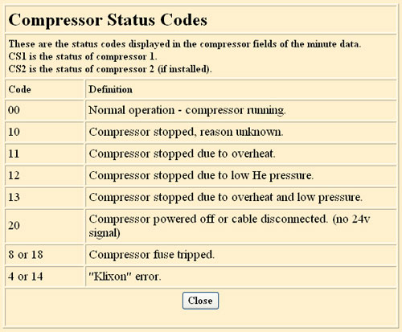

GE Exclusive Use Only
Direction 5440000, Rev# 5
Signa HDxt Service Methods
Module Version 1.0, Version Date 4/16/07
GE Exclusive Use Only |
The Help windows are proprietary features only visible to users logged into the Magmon3 using the proprietary user name and password. Once you are logged in, Help Windows will appear on the Navigation Menu on the left side of the screen. Clicking the titles listed under Help Windows will display the content of the title.
Whenever the Magmon3 senses a problem where a monitored parameter has exceeded a limit or a status signal is in alarm, the Alarm LED will illuminate. View current alarms on the Front Panel Display by pressing Alarm, then scrolling through the alarms using the Up and Down buttons. The Magmon3 will display the error code followed by the description.
Select Error Codes from the Help Windows menu to see the complete list of Error Codes and definitions. See Illustration 1 for an example and partial list of the Error Codes and definitions.
Illustration 1: Example of Magmon Error Codes

When viewing the Minute Data files, it is helpful to understand the meaning of the acronyms used in the column headers and compressor status codes. Selecting Minute Data Help from the Navigation Menu provides the user with more detailed information regarding the column headers and the compressor status codes. See Illustration 2 and Illustration 3 for examples of the Help windows.
Illustration 2: Example of Minute Data Columns

Illustration 3: Example of Compressor Status Codes
